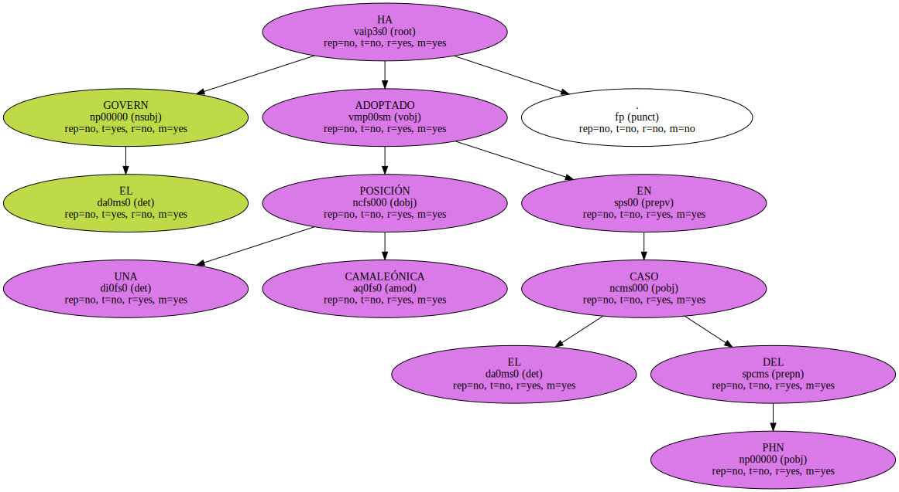
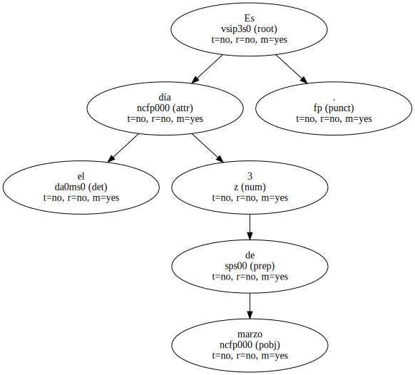
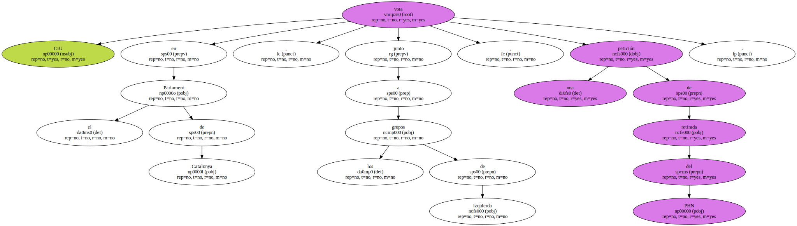
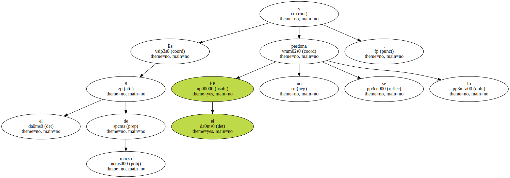
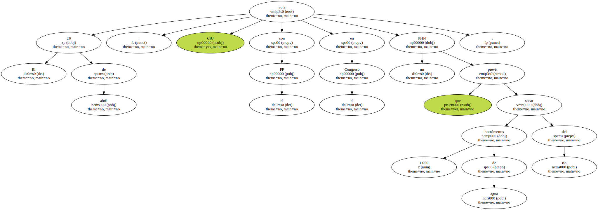
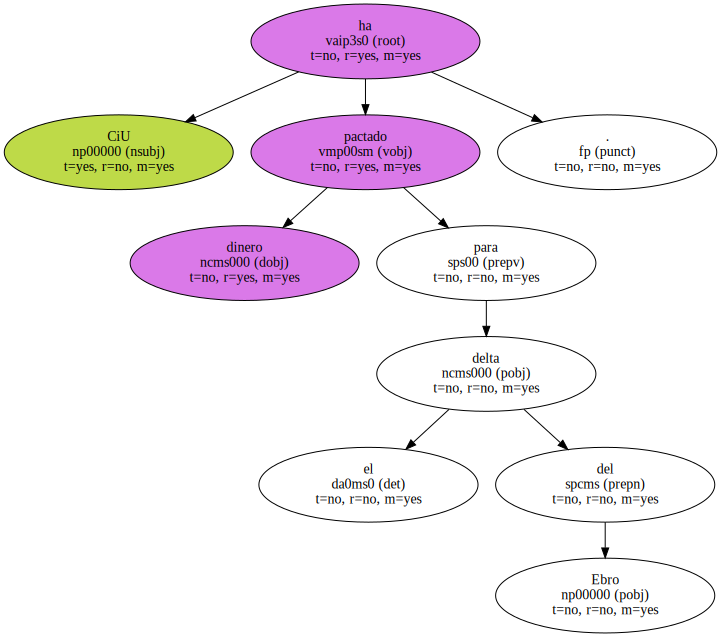

EL GOVERN HA ADOPTADO UNA POSICIÓN CAMALEÓNICA EN EL CASO DEL PHN.
Artur Mas y Felip Puig supeditan el voto al PHN a que el PP rebaje los 1.050 hectómetros que se pretenden extraer del Ebro.

Es el día 3 de marzo.
CiU vota en el Parlament de Catalunya , junto a los grupos de izquierda , una petición de retirada del PHN.
Es el 8 de marzo y el PP no se lo perdona.
El 26 de abril , CiU vota con el PP en el Congreso un PHN que prevé sacar 1.050 hectómetros de agua del río.
CiU ha pactado dinero para el delta del Ebro.
